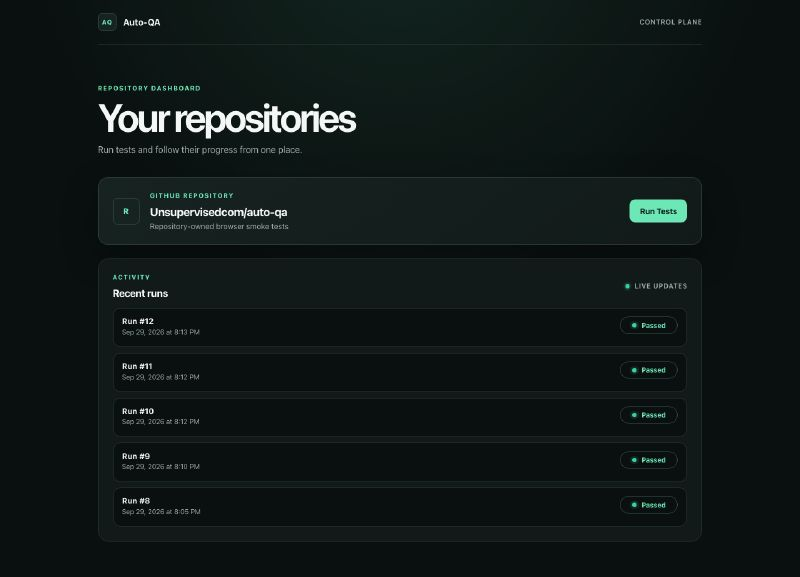
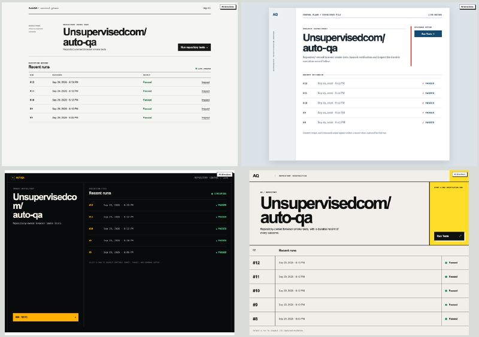
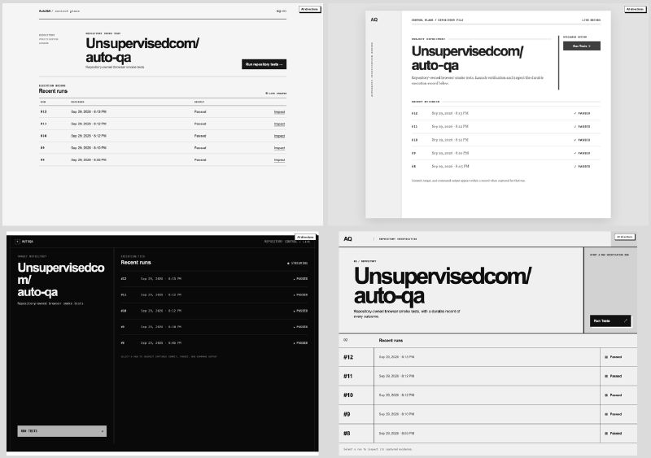
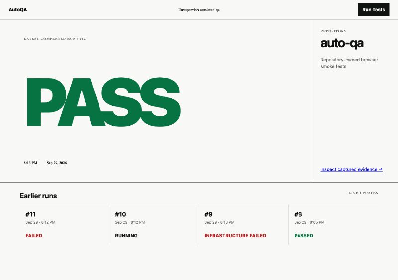
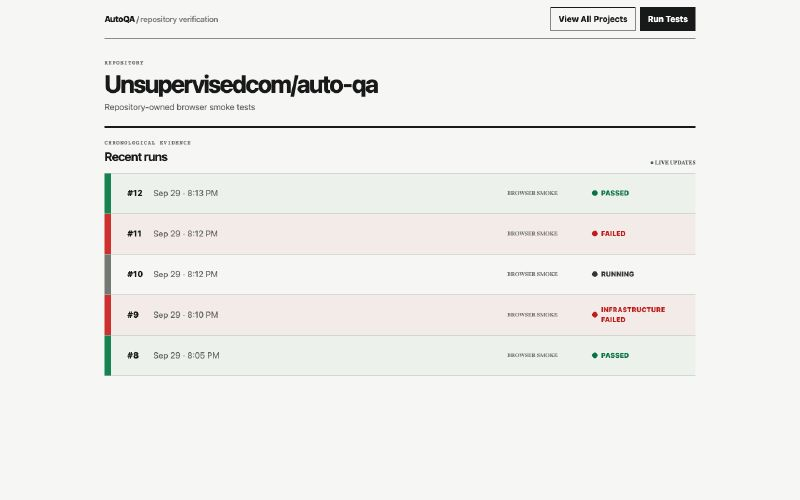
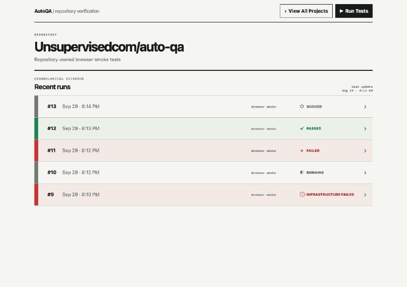
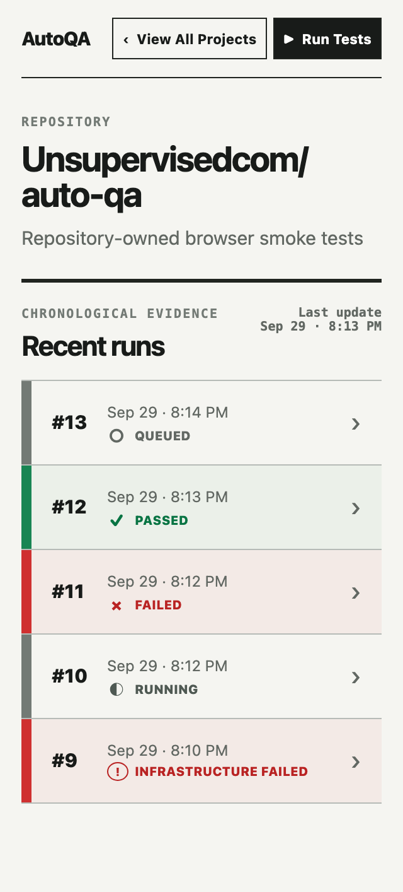

中文全文译文：由「译文工坊」根据英文原文自动翻译生成，供学习参考。结构与措辞以译文为准；想看原始论述，请点上方「阅读原文」。
salman.io
你让自己最喜欢的智能体为令人兴奋的新产品生成一版设计。它运转了好一阵，结果一出来，你的肩膀不由得垮了下来——又是那种一眼就能认出的 AI 设计，和地球上其他网站如出一辙。靛蓝色点缀、满屏的 Inter、居中的首屏配两个按钮，还有“Elevate your workflow”这类空泛的承诺。细节各有不同，但它们看上去都像同一个产品。
这到底为什么成了默认的样子？怪 Tailwind UI 吧。好吧，我开玩笑的。不过也不完全是玩笑。Tailwind 的作者 Adam Wathan 甚至还为 AI 生成的网站清一色变紫道过歉。不过问题不只是紫色——就算你跳过这一步，告诉智能体“不要紫色”或“不要 Inter”，它也往往会转向另一套默认选择，而其他智能体同样会照着来：奶油色配赤陶色、黑底酸性绿、报纸式版面，等等。
用户已经厌倦了这些设计。开发者其实也不想做出这样的东西（有人甚至翻遍 Reddit 寻找避免的办法），但智能体总会一头扎进同样的模板化领地。这是默认行为，要避开需要花力气，所以大多数人懒得去管。
好消息是，模型的可引导性很强。想让设计效果大幅提升，所需的功夫比你想象的要少。只要稍加引导，就能让设计摆脱令人生畏的默认样式，转向既独特又适合产品的方向。
在继续之前，我得先说明：像 Claude Design 这样成熟的设计工具提供了更多的灵活性和控制力，也正是为此而生。但很多开发者觉得它们小题大做。他们不想为了给产品生成一版初始设计，就把整个设计应用走一遍。他们想待在终端里。如果你也是这样，这篇文章就是写给你的。
设计迭代：推动智能体更进一步
对待设计，就像你已经习惯的对待代码那样：生成多个方案，审慎地审视，然后打磨优化。
- 放开思路，大胆探索。提示词让智能体给出 3-5 种不同的产品设计方案。要求它们在结构、层级、排版、信息密度和个性上真正不同，而不是简单换个配色，并让它加入一个“野路子”方案，甚至可以质疑工作流本身。在这个阶段，你要尽可能开放、有创意，所以别忍不住直接丢给它一个设计，然后说“照这个来”。你要做的是发散式探索，而不是狭隘的照单听写。
- 明确关键标准。看到几个方案后，你可能会更倾向其中某种结构。想想原因：产品目标里有没有能帮你做决定的依据？先定义最重要的是什么：任务清晰度、层级、信息密度、可访问性、响应式表现，以及与实现的契合度。然后把各个方向并排渲染出来，依据这些标准选出一个，记录它为何合适，并在其中继续迭代。
- 对抗式评审。确定设计的大方向后，让全新上下文的评审者从不同角度对它发起“攻击”：用户任务、视觉层级、可访问性、持怀疑态度的首次使用，以及实现约束。每位评审者都应指出最致命的一个弱点，并提出具体的修正方案。
- （可选）设计系统。现在你已经有了一个起点，也大致知道还能往哪些方向发展。如果想更进一步，可以花些时间在设计系统、品牌、配色等方面迭代。人们通常一上来就做这些，但其实应该放到最后（或者在产品需求更明确之前干脆不做）。一种做法是建立一个 DESIGN.md 文件。（你可能会觉得这个 DESIGN.md 系统库很有用：styles.refero.design。）
一个探索示例
下面我来演示如何用这套流程迭代我正在做原型的产品 AutoQA 的设计。它是一个简单的应用，用来发起 QA 运行并监控结果。它现有的设计只来自我最初构建时的几次基础迭代，主要是要求做出“深色、精致”的效果，所以近乎纯黑的处理多少也反映了我自己的提示词。根本问题依然存在：我接受了一个看似合理的视觉方案，然后就继续往下做了。

基线版本看起来很精致，但它的视觉选择与 QA 工具的需求并无实质关联。它们只是泛泛的“平均水准的好看”：近黑底色配一个亮色强调色、全大写标签、大而空的标题、圆角容器里套圆角容器、发光圆点，以及状态胶囊。同样的处理几乎可以套用到任何开发者 SaaS 仪表盘上。
以这次一次性生成的设计出错之处为例：绿色并不适合作为 QA 工具的强调色。绿色应当代表通过。把它用在按钮、装饰性发光和各种界面外壳上，会削弱页面上最重要的信号。其余一切都可以保持中性。
第一轮：发散式探索
我生成了四个视觉立场各异的方向：运营导向、证据导向、平静且偏编辑风格，以及一个尝试性的“百搭牌”方案。

重点不是挑出最好看的配色，所以我先用灰度来比较——结构、密度和层级必须独立撑起设计。

当这些方案摆在眼前后，有几个决定变得显而易见：
- 把颜色留给含义。这是一个 QA 工具。失败的红色和通过的绿色应当一眼就最醒目——即使眯起眼睛看也是如此。有一个方向在已通过的运行旁使用了红色装饰，因此立刻被否决。界面的其余部分应保持中性，并且状态仍须通过文字和形状清楚表达。
- 给工作内容足够的空间。另一个方向把“运行测试”操作放在一个常驻的侧边栏中，压缩了每一行运行记录。这个操作固然重要，但结果才是主要的证据展示区域。
- 响应式不等于堆叠。每个方案在移动端宽度下都能放得下，但这本身并不意味着对移动端友好。在小屏幕上，发起一次运行和打开以往的结果仍然需要清晰易用。
- 朴素的产品逻辑胜过视觉新奇。这些判断并不是什么深奥的设计洞见，它们直接来自这个工具本身的用途。
具体的方案让这些想法更容易被看见和解释。Adam Wathan 和 Steve Schoger 的 Refactoring UI 等书籍能帮助开发者建立词汇体系——层级、间距、对比和色彩——但对比方案能让这些知识有具体的东西可供回应。
第二轮：厘清标准
四个设计的内容和交互模型仍然几乎完全相同。这算不上有意义的收敛。我的需求说明要求每个方案都保留现有的仓库页头、操作和运行列表。
其中一些约束来自此前由大语言模型（LLM）主导的实现决策，而不是经过验证的用户需求。把它们冻结之后，我也就让 wildcard 无法质疑体验本身。
在生成下一轮之前，我先厘清了判断标准：
- 哪些约束反映了真实的用户任务？
- 哪些只是在描述当前的实现？
- wildcard 可以改变什么——视觉处理、信息层级，还是工作流本身？
后来的一个 wildcard 方案围绕最新结果而不是运行列表来组织页面。这是一个真正的 UX 替代方案，但执行上把 PASS 放得大到滑稽。它的价值在于划出了一条边界，而不是因为它应该胜出。

我没有采用这个执行方案。我带入对抗式评审的方向，是一个中性的全宽运行历史，并配以语义化状态。

第三轮：对抗式评审
确定大方向之后，下一个风险是被困在这个方向里。我并行运行了五次全新上下文的评审，去发现当前方向可能掩盖的机会。三个模型分工：gpt-5.6-sol:high 检查 QA 工作流和 wildcard 替代方案；claude-sonnet-5:low 负责交互、可访问性和实现；gpt-6-luna:high 评审层级、设计逻辑和主题。它们提出了几处小改动，改进了这个方向。
wildcard 的评审意见影响更大。它提出围绕互不相同的未解决问题，而不是按时间顺序的运行来组织产品。我没有采纳这个模型，因为它依赖未经验证的假设：如何对失败分组，以及如何判断后续运行已将其解决。但它改变了我对布局的思考：主要单元最终可能是一个需要关注的问题，而不是一次已发生的运行。
功能层面或 UX 层面存在分歧的想法尤其有价值。我们不应只在字体、颜色这类小选择上迭代，而应审视产品解决问题的不同方式。现在正是做这件事的合适阶段——方向已经足够具体，可以被批评，但设计尚未锁定。否则，人和模型都会在之后的每一次迭代中不断强化同样的假设。


亲自试试
下次让智能体为你生成设计时，别在初稿就停下。花点时间迭代，一点点投入就能带来很大改变。
每次这样做，你都会发现流程中那些细微的差异，找到最适合自己的方式。
一点一点地，你会找到属于你自己的美学。